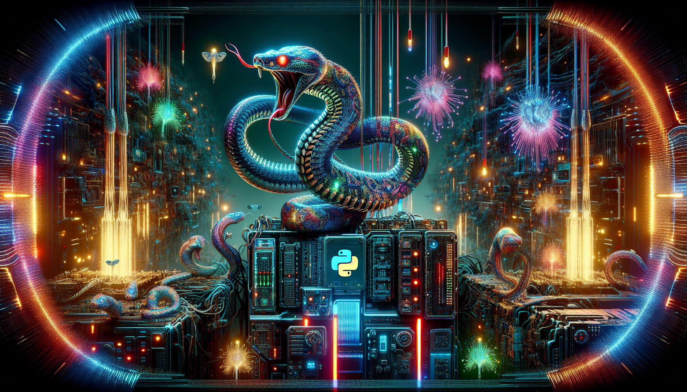

Python and the Future of AI
In recent years, AI and machine learning have become hot topics in the tech industry, with companies and organizations investing heavily in these technologies to improve efficiency and decision-making processes. And while there are various programming languages that can be used for AI, Python has emerged as a popular choice due to its versatility and ease of use.
One of the main reasons for Python's success in the field of AI is its robust and extensive libraries. These libraries, such as TensorFlow, Keras, and PyTorch, provide pre-built functions and algorithms for machine learning and deep learning tasks, making it easier for developers to build and train AI models. Additionally, Python's simple and readable syntax makes it accessible to both experienced programmers and those new to coding, making it an ideal language for AI development.
Moreover, Python's open-source nature and active community also contribute to its potential for the future of AI. With a large number of developers constantly working on improving and updating the language, Python is evolving at a rapid pace, making it well-equipped to handle the complex and ever-changing world of AI. As AI and machine learning continue to advance, Python's role in powering these technologies is only expected to grow, making it an essential language for anyone looking to enter the field